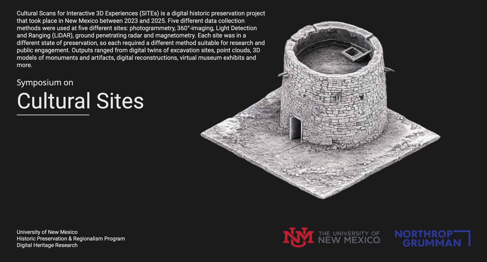

Cultural Scans for Interactive 3D Experiences (SITEs) is a digital historic preservation project that took place in New Mexico between 2023 and 2025. Five different data collection methods were used at five different sites: photogrammetry, 360° imaging, Light Detection and Ranging (LiDAR), ground penetrating radar, and magnetometry. Each site was in a different state of preservation, so each required a different method suitable for research and public engagement. Outputs ranged from digital twins of excavation sites, point clouds, 3D models of monuments and artifacts, digital reconstructions, and virtual museum exhibits.
Cultural SITEs was a partnership between the New Mexico Humanities Council and Northrop Grumman's Technology for Conservation initiative.
Symposium on
Cultural Sites
UNM School of Architecture & Planning
Albuquerque, New Mexico